Arranque
Barra de procesos, buscador con Ctrl+K y aviso de que los datos son de desarrollo en estas fotos.
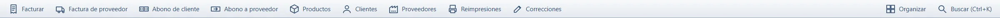
Sirve a una tienda o a un negocio mediano que necesita saber qué hay, qué se vendió, quién debe y cómo cerró la caja. Corre en Windows, sin servidor y sin internet.
Es control interno. No emite factura electrónica ni se conecta a la DIAN.
El inventario se descuadra, los fiados quedan en notas y el cierre de caja no coincide con el efectivo. Un programa en la nube se detiene cuando se va la red. Aquí la base queda en el mismo computador.
Barra de procesos, buscador con Ctrl+K y aviso de que los datos son de desarrollo en estas fotos.

Maestros con código, precios, identificación y estado. Nada de esta página usa datos de un negocio real.
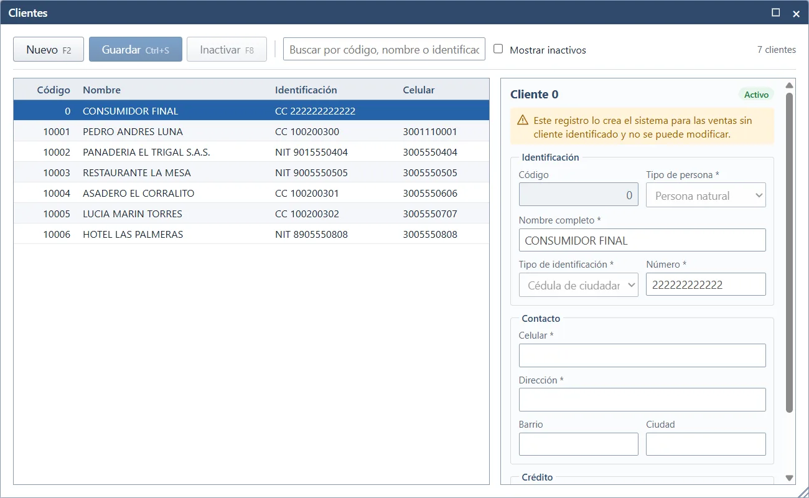
La factura de proveedor entra mercancía. La de cliente la saca y, si es a crédito, queda en cartera.
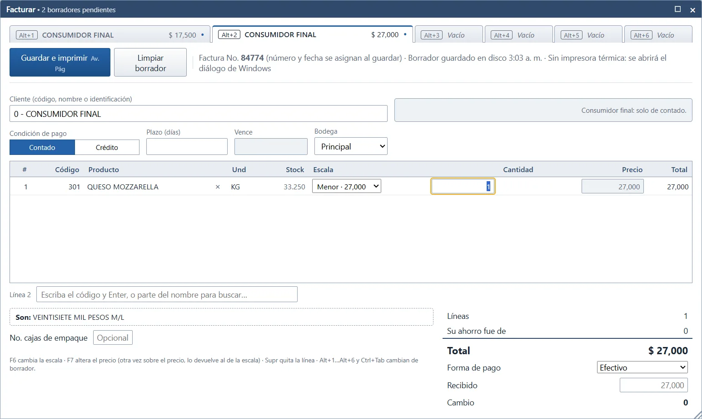
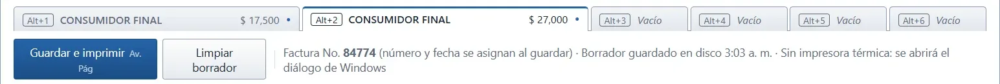
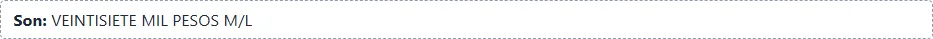
Seis borradores (Alt+1…Alt+6), cantidad con Enter y tirilla térmica. El video no tiene sonido.
Abono de cliente, cuentas por cobrar y cuentas por pagar, en la misma transacción que el inventario cuando el documento lo toca.
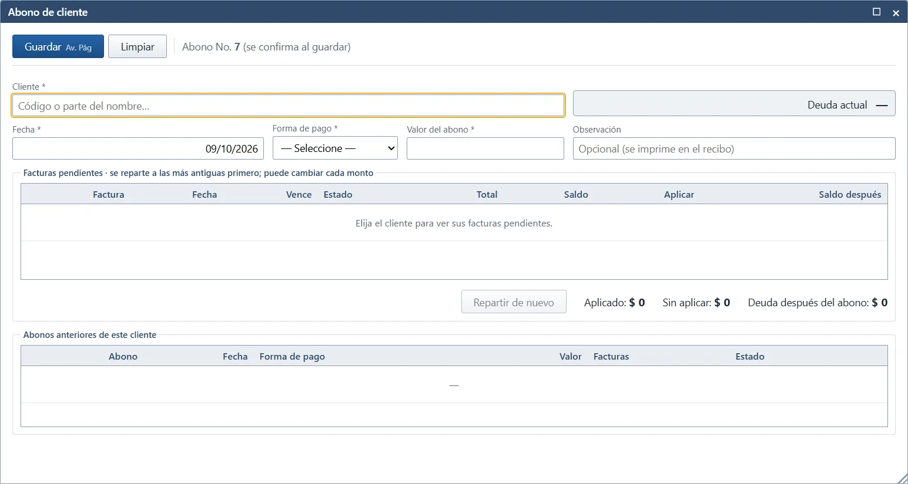
El stock es la suma del kardex. El reporte valorizado muestra existencias y costo.
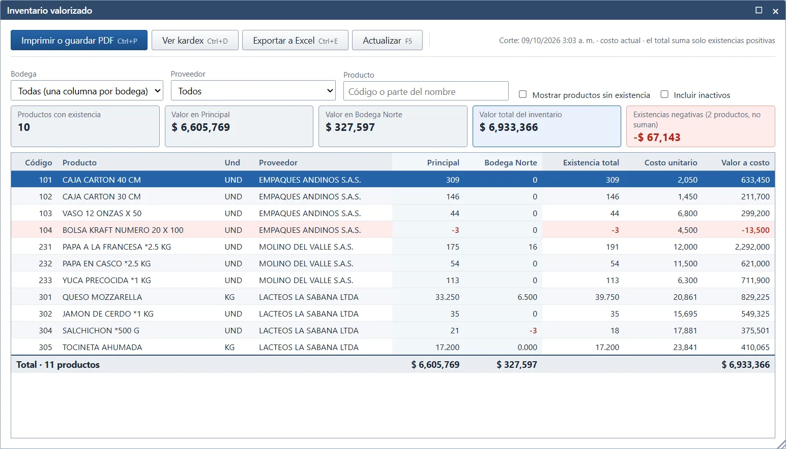
No se borra el documento: se anula o se corrige, y el historial guarda el cambio.
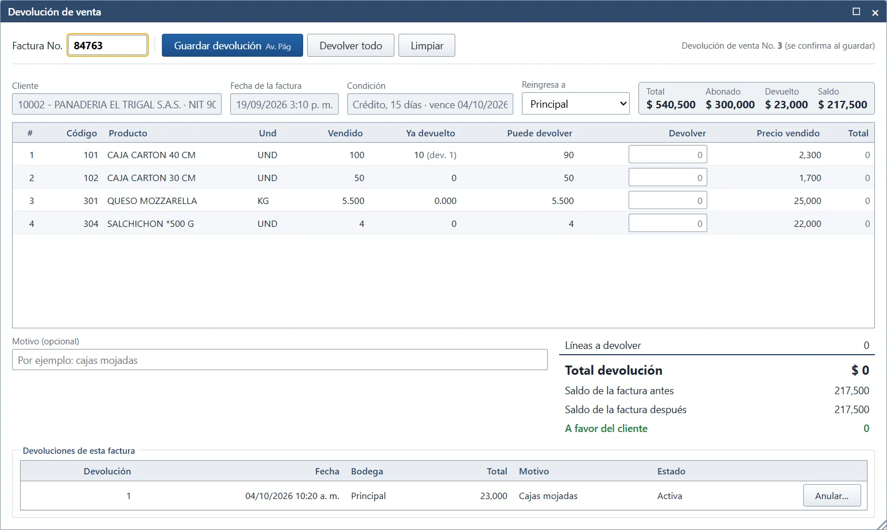
Cierre de caja, historial de cambios y varias ventanas en el mismo escritorio.
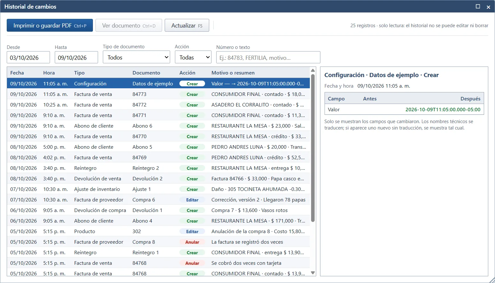
Copia local, restauración con contraseña y, si la base no abre, una pantalla anterior al ingreso para elegir una copia válida.
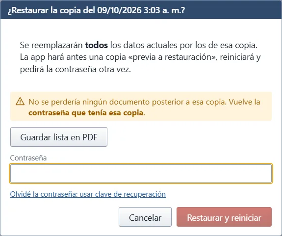
Ctrl+K abre el buscador de procesos, Ctrl+F6 cambia de ventana y Ctrl+Shift+O las organiza. Av. Pág guarda la factura. No hay sincronización en la nube: si no hay red, se sigue vendiendo.
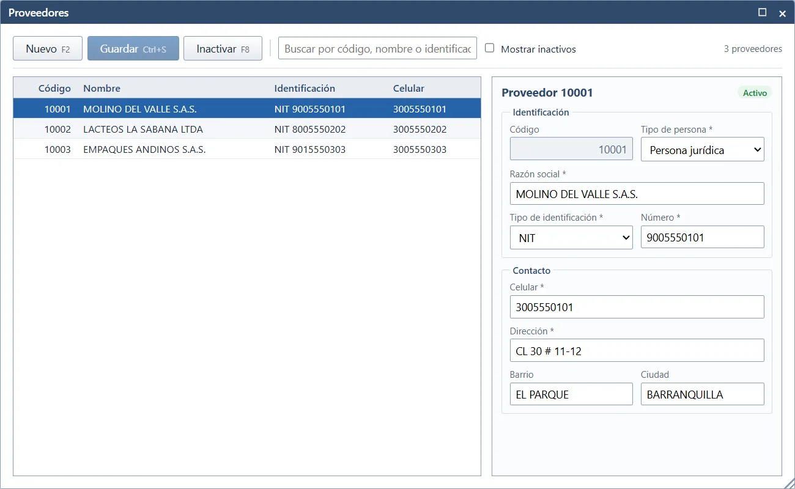
Por fases, con revisión al cierre de cada una: primero el diseño y las reglas, después cada grupo de pantallas, y al final el instalador. Las decisiones que no estaban cerradas quedaron escritas en vez de inventarse.
LinkedIn, GitHub y el correo se completan en config.js.